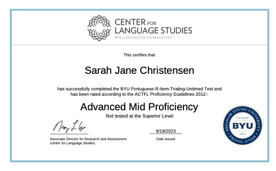

According to the ACTFL, "Speakers at the Advanced-High level perform all Advanced-level tasks with linguistic ease, confidence and competence. They are able to consistently explain in detail and narrate fully and accurately in all time frames. In addition, Advanced-High speakers handle the tasks pertaining to the Superior level but cannot sustain performance at that level across a variety of topics. They can provide a structured argument to support their opinions, and they may construct hypotheses, but patterns of error appear. They can discuss some topics abstractly, especially those relating to their particular interests and special fields of expertise, but in general, they are more comfortable discussing a variety of topics concretely. Advanced-High speakers may demonstrate a well-developed ability to compensate for an imperfect grasp of some forms or for limitations in vocabulary by the confident use of communicative strategies, such as paraphrasing, circumlocution, and illustration. They use precise vocabulary and intonation to express meaning and often show great fluency and ease of speech. However, when called on to perform the complex tasks associated with the Superior level over a variety of topics, their language will at time break down or prove inadequate, or they may avoid the task altogether, for example, by resorting to simplification through the use of description or narration in place of argument or hypothesis."

According to the ACTFL, "At the Advanced Mid sublevel, readers are able to understand conventional narrative and descriptive texts, such as expanded descriptions of persons, places, and things and narrations about past, present, and future events. These texts reflect the standard linguistic conventions of the written form of the language in such a way that readers can predict what they are going to read. Readers understand the main ideas, facts, and many supporting details. Comprehension derives not only from situational and subject-matter knowledge but also from knowledge of the language itself. Readers at this level may derive some meaning from texts that are structurally and/or conceptually more complex."
According to the ACTFL, "Writers at the Advanced Mid sublevel are able to meet a range of work and/or academic writing needs. They demonstrate the ability to narrate and describe with detail in all major time frames with good control of aspect. They are able to write straightforward summaries on topics of general interest. Their writing exhibits a variety of cohesive devices in texts up to several paragraphs in length. There is good control of the most frequently used target-language syntactic structures and a range of general vocabulary. Most often, thoughts are expressed clearly and supported by some elaboration. This writing incorporates organizational features both of the target language and the writer's first language and may at times resemble oral discourse. Writing at the Advanced Mid sublevel is understood readily by natives not used to the writing of non-natives. When called on to perform functions or to treat issues at the Superior level, Advanced-Mid writers will manifest a decline in the quality and/or quantity of their writing."
According to the ACTFL, "At the Advanced Low sublevel, listeners are able to understand short conventional narrative and descriptive texts with a clear underlying structure though their comprehension may be uneven. The listener understands the main facts and some supporting details. Comprehension may often derive primarily from situational and subject-matter knowledge."
For my language competence artifact on speaking, I chose the certificate that I received upon completion of the ACTFL Oral Proficiency Interview (OPI), which I had to do for my senior proficiency evaluation. I also included what the ACTFL says about speakers rated at my level. Two years ago, I did an OPI and received a rating of Advanced Mid. This time, however, I received Advanced High, which I think showcases very nicely how my speaking abilities have developed during my time at BYU. I have practiced speaking in a variety of situations, which has made it easier to discuss different topics. I hope at some point to do some professional work that includes speaking Portuguese, like conducting a business deal with a Brasilian company or helping native Portuguese speakers with the complexities of accounting. I plan to continue practicing my speaking skills by remaining in contact with my Portuguese-speaking friends and practicing Portuguese daily with my husband.
For my reading artifact, I included a rating from a reading test that I took at BYU, from which I received a score of Advanced Mid. I have done a lot of reading during my Portuguese classes, especially as I have taken courses on Lusophone theatre and literature, with a special emphasis on the literature of women writers and how to transcribe their works. This includes doing a research internship abroad in Spain and Portugal where I handled manuscripts and books from the 18th century. With these experiences, I have had to decipher very old Portuguese that was very different to the modern Brasilian Portuguese that I speak, which helped tremendously to improve my reading comprehension. I hope to continue to be involved with projects such as these so that I can keep deepening my reading ability.
The writing artifact that I chose is from the Writing Proficiency Test (WPT), which is also through ACTFL, that I completed as part of my senior evaluation. In my time as a Portuguese Studies secondary major, I have taken several classes on grammar and composition, in which I wrote many essays. When I first started at BYU, I had little confidence in my ability to write well in Portuguese, as it was not something I ever really needed to do previous to coming to college. I believe that the different works and essays I have written have made me much more capable of writing good papers in Portuguese, and that is what enabled me to achieve the assessment of Advanced Mid on the WPT. I want to continue writing in Portuguese as much as I can, about as many different topics as I can, so that I may expand my writing proficiency even more.
Finally, for the artifact on listening, I included the evaluation done by a listening test at BYU. I received a lower score on this test than I was hoping for, but I still think that my listening skills have gotten drastically better since I started at BYU. For example, I have an Auditory Processing Disorder (APD), which means that I have trouble processing and understanding correctly what people say to me, especially over the phone. However, I have been having more conversations over the phone where I could understand what the person I was speaking with was saying, such as during the OPI, which is performed over the phone. I plan to practice having more conversations over the phone so I can stay used to how different it sounds to real life, and to expose myself more often to the European Portuguese accent, since it is so different from that of Brasil, which makes it harder for me to understand.